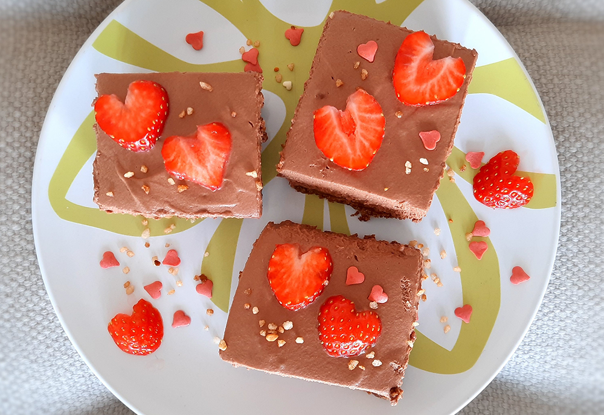

chocolade cheesecake
Deze no bake cheesecake is handig als je geen oven hebt maar wel wilt bakken!

Bereidingsduur: 180 minuten
Aantal personen: 8
Ingrediënten:
250 milliliter slagroom
200 gram monchou
200 gram pure chocola
50 gram boter
enkele aardbeien
7 gram vanillesuiker
175 gram bastognekoekjes
2 eetlepels basterdsuiker
eventueel versieringen
250 milliliter slagroom
200 gram monchou
200 gram pure chocola
50 gram boter
enkele aardbeien
7 gram vanillesuiker
175 gram bastognekoekjes
2 eetlepels basterdsuiker
eventueel versieringen
Instructies:
1. Verkruimel de koekjes totdat deze net zand zijn. Smelt de boter en voeg daarna de koekkruimels hieraan toe en meng goed. Pak een taartvorm en verdeel de koekkruimels over de bodem. Druk goed aan. Zet de bodem even in de koelkast.
2. Breek de chocolade en laat deze smelten. Dit kan au bain marie maar ook in de magnetron is dit mogelijk. Ondertussen klop je in een grote kom de monchou met een mixer. Voeg hier vervolgens de warme chocola aan toe en klop deze tot een gladde massa.
3. Klop in een andere kom de slagroom en voeg deze samen met het water en de suiker toe aan de grote kom met het chocolademengsel. Klop totdat alles goed verdeeld en glad is. Verdeel dit mengsel over de taartvorm. Laat de taart ongeveer 2 uur in de koelkast staan zodat deze kan opstijven.
4. Ondertussen kun je de aardbeien in hartjesvormen snijden. Versier de cheesecake met de aardbeien en eventueel andere versiersels.
1. Verkruimel de koekjes totdat deze net zand zijn. Smelt de boter en voeg daarna de koekkruimels hieraan toe en meng goed. Pak een taartvorm en verdeel de koekkruimels over de bodem. Druk goed aan. Zet de bodem even in de koelkast.
2. Breek de chocolade en laat deze smelten. Dit kan au bain marie maar ook in de magnetron is dit mogelijk. Ondertussen klop je in een grote kom de monchou met een mixer. Voeg hier vervolgens de warme chocola aan toe en klop deze tot een gladde massa.
3. Klop in een andere kom de slagroom en voeg deze samen met het water en de suiker toe aan de grote kom met het chocolademengsel. Klop totdat alles goed verdeeld en glad is. Verdeel dit mengsel over de taartvorm. Laat de taart ongeveer 2 uur in de koelkast staan zodat deze kan opstijven.
4. Ondertussen kun je de aardbeien in hartjesvormen snijden. Versier de cheesecake met de aardbeien en eventueel andere versiersels.